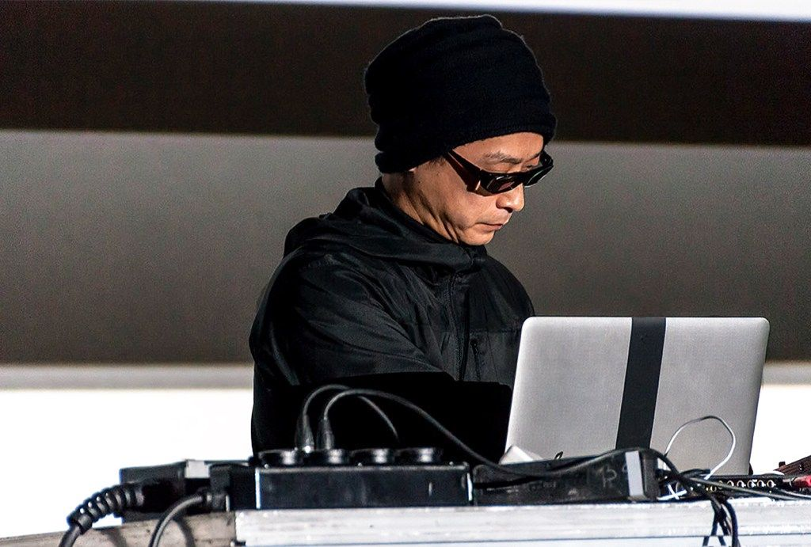
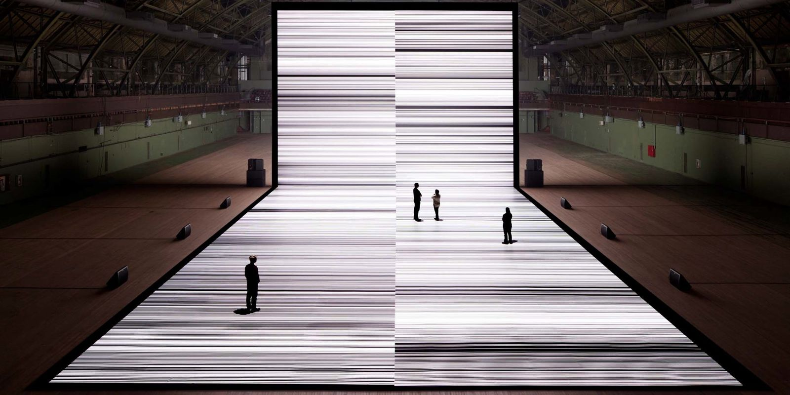
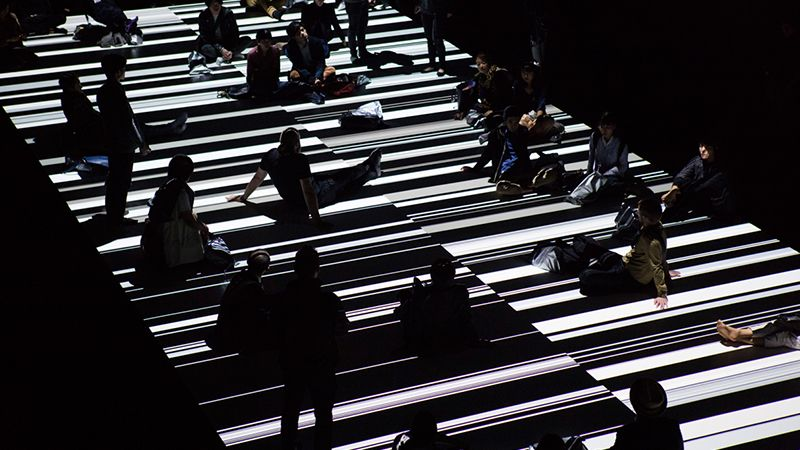
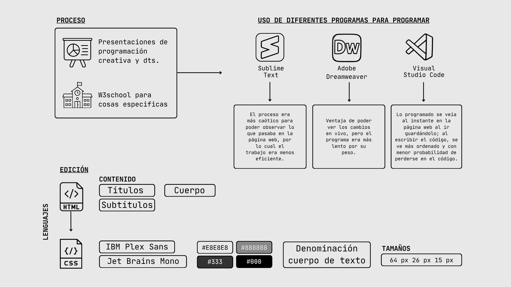

Ryoji Ikeda / Test Pattern
Consta de una práctica artística donde un autor crea un sistema el cuál crea obras con cierto grado de autonomía. El artista no crea la imagen directamente, sino el sistema que crea estas imágenes, se definen las reglas y variables que siguen procesos automatizados para que la obra bajo estos factores genere múltiples resultados.
Se caracteriza por su aleatoriedad, lo que significa que los resultados artísticos siempre serán distintos, porque uno entrega una instrucción específica, pero el sistema lo ejecuta según los parámetros establecidos.

Ryoji Ikeda
Reconocido DJ, productor musical y artista de medios visuales. El artista logra unificar fenómenos musicales con obras visuales basadas en las lógicas matemáticas, creando instalaciones envolventes donde lo digital llega a sentirse físico.
Crea imágenes desde códigos y números, centrando sus obras visuales desde la base de variados campos científicos como la astronomía, medicina y más.
Ikeda produce una experiencia visual y sonora a partir de datos concretos.
Consta de una instalación audiovisual que convierte la data en sonido e imagen. Convierte cualquier tipo de información en un lenguaje primitivo de ceros y unos, y blanco y negro, de esa manera surgen estos interesantes patrones. Expresándolos en imágenes y sonidos. Visto en el juego de blanco con negro y sonidos rítmicos; lo que se ve y escucha está sincronizado por una misma base de datos.
Ikeda comenzó como DJ y necesitaba visuales detrás de él, así decidió usar expresiones binarias en sonido.
Hace que las personas experimenten los patrones desde adentro, perdiéndose en el flujo libre de los patrones y vivir información concreta de manera abstracta como una experiencia envolventemente sensorial.
La primera instalación el año 2008 en YMAC Japón, consistió en una secuencia de pruebas para máquinas y personas. Compuesta por patrones visuales generados a partir de ondas sonoras en tiempo real, de instalación de ocho monitores y dieciséis altavoces alineados en el suelo de un espacio oscuro.
Luego en el año 2010 [versión n.2] evoluciona a dos amplias pantallas, una en el suelo y otra del suelo al techo, que proyectan las imagenes de blanco y negro, al ritmo de una potente y altamente sincronizada banda sonora.
Luego en el año 2011 [versión n.3] pasa a ser 3 proyectores y con más avances tecnológicos, y así sucesivamente.
Ikeda ha llegado a hacer 13 versiones del "Test Pattern" y comienzó a exhibirse en eventos internacionales.
El año 2019 se expande a hacer impresiones físicas de las imágenes del sistema binario, colocadas en museos.

Ha llegado a hacer 15 versiones de nuevas iteraciones del sistema de "Test Pattern", así entendemos que es una obra abierta que se va reconfigurando con cada presentación del artista.
Modularidad: La obra está formada por pequeñas unidades de información, como bits y datos independientes, que al combinarse crean patrones visuales en blanco y negro.
Automatización: Sistema que puede convertir datos automáticamente en arte generativo. Ikeda entrega datos e instrucciones al sistema, y el computador genera automáticamente las imágenes y sonidos sin ser creados manualmente uno por uno.
Variablidad: Cómo los medios no tienen una sola versión fija, sino que se pueden adaptar y cambiar. En “Test pattern” si Ikeda cambia el dato el resultado de sonido e imagen cambia completamente, y así va variando el output visual, produciendo así distintas visualizaciones y sonidos.
Representación numérica: Lo digital está compuesto por números, cada imagen, sonido o video está compuesto de data. En esta obra Ryoji Ikeda cada contenido que elige, lo convierte en lenguaje binario de 0 y 1.
Transcodificación: "Test pattern" se basa en cómo se puede transformar una información abstracta en una visualización y experiencia sensorial, pasando a ser líneas blanco y negro, sonidos con ritmo. Crea una experiencia comprensible para las personas.


Bibliografía
Invaluable. (2018, 11 de octubre). What is Generative Art? A Guide to the History and Future of Algorithmic Art. https://www.invaluable.com/blog/generative-art/
Forma. (s.f.). test pattern. https://forma.org.uk/projects/test-pattern
Ikeda, R. (s.f.). test pattern. Ryoji Ikeda. https://www.ryojiikeda.com/project/testpattern/
The Vinyl Factory. (2017, 10 de octubre). Ryoji Ikeda's test pattern [nº12] at Store X. YouTube. https://www.youtube.com/watch?v=jCR7KJQtwGE
W3Schools. (s.f.). HTML CSS. https://www.w3schools.com/html/html_css.asp
W3Schools. (s.f.). HTML Images. https://www.w3schools.com/html/html_images.asp
W3Schools. (s.f.). HTML5 Audio. https://www.w3schools.com/html/html5_audio.asp